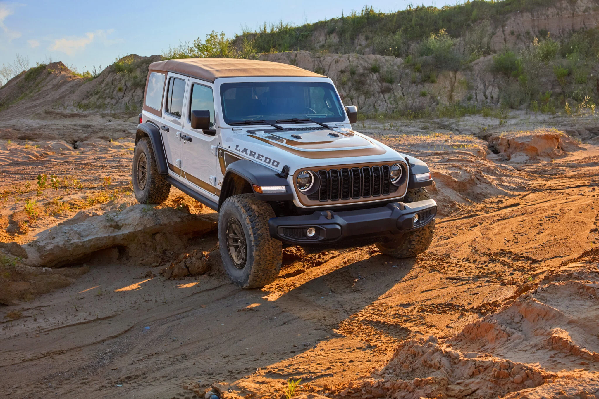
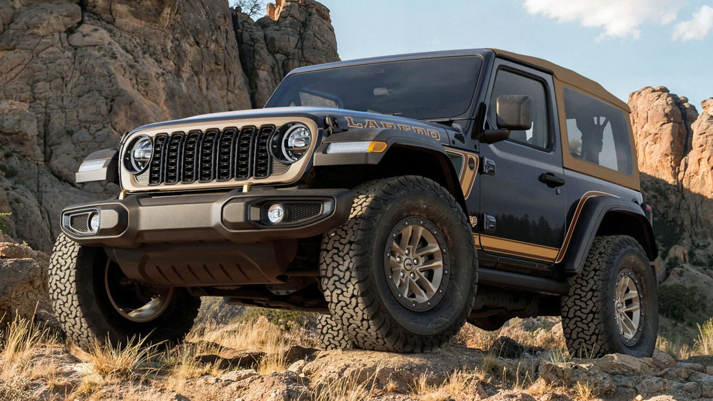
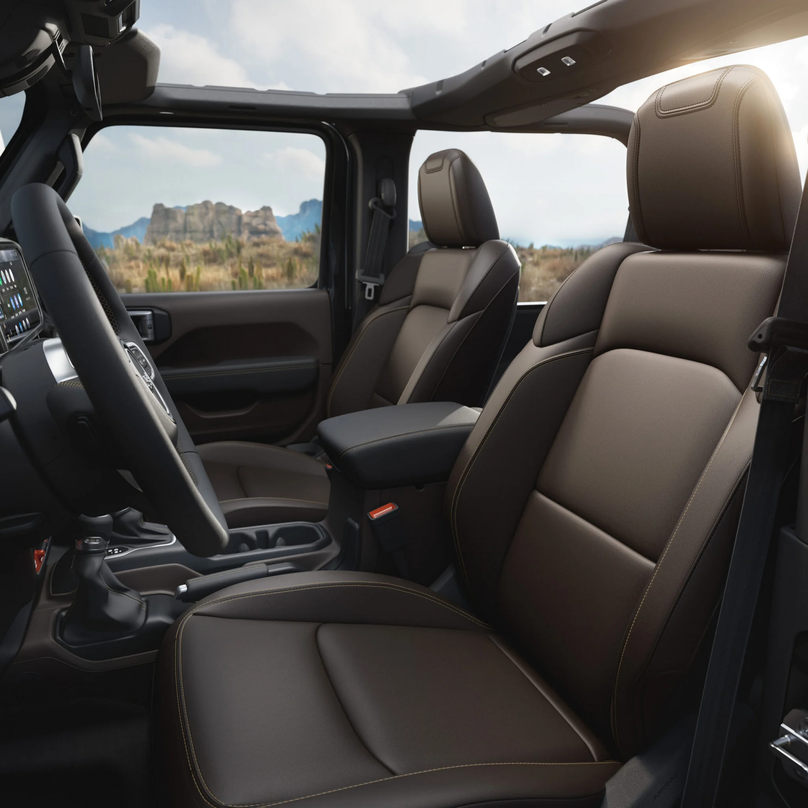

▲ 버건디·골드 라레도 레터링을 두른 지프 랭글러 라레도가 암반 지형을 오르고 있다 ⓒ Jeep / Carscoops
1980년대 지프 라인업을 대표했던 이름, '라레도'가 40여 년 만에 랭글러의 스페셜 에디션으로 돌아왔습니다. 지프는 매달 새로운 한정판 랭글러를 하나씩 공개하는 '트웰브 포 트웰브(Twelve4Twelve)' 프로젝트의 아홉 번째 모델로 2027 랭글러 라레도를 최근 공개했습니다. 오프로드 트림 윌리스를 기반으로 하되, 미국 남서부 사막 지역의 감성을 입힌 것이 특징입니다.
1. 40년 만에 돌아온 이름값 — '랭글러 라레도'는 무엇인가
라레도는 1980년대 지프 풀사이즈·CJ 라인업에 쓰이던 트림명으로, 미국 텍사스 국경 도시 라레도와 아메리칸 사우스웨스트의 정서를 담은 이름이었습니다. 지프는 이 헤리티지 네임을 2027 랭글러에 다시 붙이면서, 매달 새로운 한정판을 순차 공개하는 '트웰브 포 트웰브' 프로젝트의 아홉 번째 주자로 내세웠습니다. 기반이 되는 트림은 오프로드 지향 사양인 윌리스(Willys)로, 화려한 편의 사양보다는 단순함과 기계적 감성, 클래식한 지프 정체성을 강조합니다.
지프는 앞서 2026년 이스터 지프 사파리 60주년 행사에서도 라레도 콘셉트카를 선보이며 향후 라인업 방향성을 예고한 바 있는데, 이번 양산형 라레도는 그 연장선에 있는 모델로 풀이됩니다.
2. 사막의 감성을 담은 디자인 — 탄색 소프트탑의 귀환

▲ 최근 SUV에서는 보기 힘들었던 탄색 소프트탑이 랭글러 라레도에 다시 적용됐다 ⓒ Jeep / Carscoops
가장 눈에 띄는 변화는 최근 SUV 시장에서 자취를 감췄던 탄색(tan) 소프트탑의 복귀입니다. 소프트탑 외에 블랙 하드탑이나 파워 소프트탑도 선택할 수 있습니다. 외관에는 고비(Gobi) 스타일 그릴, 후드에 새겨진 버건디·골드 컬러의 'LAREDO' 레터링과 보디사이드 스트라이프, 올가미 모양의 '4WD' 뱃지를 새긴 브론즈 견인고리가 더해졌습니다.
실내는 바이슨 브라운(Bison Brown) 나파 가죽 시트에 마야 골드 스티치를 조합했고, 시트는 열선과 전동 조절 기능을 갖췄습니다. 송풍구에는 카우보이 모자를 형상화한 디테일을 넣는 등 곳곳에 1980년대 아메리칸 사우스웨스트 감성을 녹였습니다.
3. 윌리스 기반 Xtreme 35 패키지 — 오프로드 성능은 기본

▲ 바이슨 브라운 나파 가죽 시트와 마야 골드 스티치를 적용한 랭글러 라레도의 실내 ⓒ Jeep / Carscoops
랭글러 라레도는 윌리스 트림의 Xtreme 35 패키지를 기본으로 얹었습니다. 35인치 올터레인 타이어와 4.56 리어 액슬비, 1인치 리프트, 업그레이드된 브레이크가 포함되고, 강화된 도어 힌지와 휠 플레어 익스텐션도 함께 적용됩니다. 다만 이 패키지는 8단 자동변속기 전용으로만 제공되며, 수동변속기 조합은 선택할 수 없습니다. 차체는 2도어와 4도어 모델을 모두 마련해 취향에 맞게 고를 수 있습니다.
4. 가격과 출시 일정, 국내 상륙 가능성은
미국 기준 가격은 윌리스 Xtreme 35 패키지 대비 라레도 패키지 1,995달러가 추가로 붙는 구조로, 2도어 모델이 약 53,240달러(약 7,400만 원), 4도어 모델이 약 55,620달러(약 7,700만 원) 수준으로 책정됐습니다. 현지 주문은 2026년 7월 말부터 시작됩니다.
이번 랭글러 라레도는 미국 시장을 겨냥한 트웰브 포 트웰브 한정판 시리즈의 일부로, 현재까지 지프 코리아나 관련 외신에서 국내 출시 계획은 공식적으로 언급되지 않았습니다. 오프로드 마니아 사이에서 화제가 되고 있는 만큼, 향후 국내 도입 여부가 공식화될 경우 추가로 소식을 전하겠습니다.